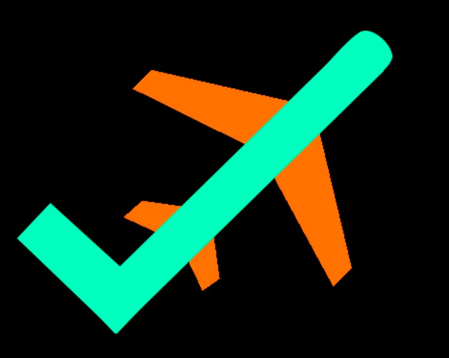

<ion-header [translucent]="true">

  <ion-toolbar color="success">
    <ion-title>Mapa de Seguimiento</ion-title>

    <ion-buttons slot="end">
      <ion-avatar>
        <!--  -->
        <ion-img src="../../../assets/img/logo.jpeg"></ion-img>  <!-- Utiliza LazyLoad -->
      </ion-avatar>
    </ion-buttons>

  </ion-toolbar>
</ion-header>

<ion-content class="ion-padding">
  <app-maptrack [idTrip]="idTrip"></app-maptrack>
</ion-content>